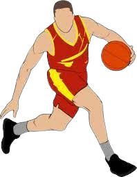

ทักษะพื้นฐานในการเล่นบาสเกตบอลมีความสำคัญอย่างยิ่งต่อการพัฒนาฝีมือและความเข้าใจในเกม โดยแต่ละทักษะจำเป็นต้องฝึกฝนอย่างสม่ำเสมอเพื่อให้เกิดความชำนาญและสามารถประยุกต์ใช้ในสถานการณ์จริงได้อย่างมีประสิทธิภาพ การเลี้ยงลูกบาส (dribbling) เป็นหนึ่งในทักษะหลักที่ผู้เล่นทุกคนต้องมี การเลี้ยงลูกช่วยให้ผู้เล่นสามารถควบคุมบอลขณะเคลื่อนที่หลบหลีกคู่ต่อสู้ โดยต้องใช้ฝ่ามือในการกระแทกลูกกับพื้นอย่างต่อเนื่อง ห้ามใช้ฝ่ามือกดจากด้านบนหรือใช้สองมือพร้อมกันในการเลี้ยง ผู้เล่นควรฝึกเลี้ยงลูกด้วยมือทั้งสองข้างเพื่อให้สามารถเล่นได้คล่องทั้งสองด้าน และควรฝึกควบคุมลูกในสถานการณ์ต่างๆ เช่น ขณะเดิน วิ่ง หรือหมุนตัว เพื่อให้สามารถเล่นได้อย่างหลากหลายและไม่เสียการครองบอลง่ายๆ การส่งลูก (passing) เป็นทักษะที่ใช้ในการเคลื่อนบอลให้เพื่อนร่วมทีมเพื่อสร้างโอกาสในการทำคะแนน การส่งที่ดีจะต้องรวดเร็ว แม่นยำ และปลอดภัยจากการสกัดของคู่ต่อสู้ รูปแบบของการส่งมีหลายแบบ เช่น การส่งแบบสองมือระดับอก (chest pass) ซึ่งเป็นการส่งที่แม่นยำและเร็ว การส่งแบบสะท้อนพื้น (bounce pass) เพื่อหลบมือฝ่ายตรงข้าม และการส่งแบบเหนือศีรษะ (overhead pass) ซึ่งใช้เมื่อต้องส่งผ่านแนวป้องกัน การส่งที่ดีควรประสานกับการเคลื่อนไหวของเพื่อนร่วมทีมอย่างมีจังหวะและมีสายตากว้างเพื่อมองเห็นช่องทางในการส่งได้หลากหลาย
การรับลูก (receiving) เป็นทักษะที่เกี่ยวข้องโดยตรงกับการส่ง ผู้เล่นต้องเตรียมพร้อมตลอดเวลาในการรับลูกจากเพื่อนร่วมทีม ต้องมีสมาธิ ตาไว และมือไว การรับลูกที่ดีช่วยให้เกมไหลลื่นและป้องกันการเสียบอล ผู้เล่นควรใช้สองมือรับลูกอย่างมั่นคง พร้อมทั้งอยู่ในท่าทางที่สามารถเปลี่ยนจังหวะไปสู่การเลี้ยงลูกหรือการยิงได้ทันที การยิงลูก (shooting) เป็นทักษะหลักในการทำคะแนน มีหลายเทคนิค เช่น การยิงแบบยืนพื้น (set shot), การกระโดดยิง (jump shot), การยิงใต้แป้น (layup) และการดังค์ (dunk) แต่ละแบบใช้ในสถานการณ์ที่ต่างกัน การยิงที่ดีต้องใช้การประสานของร่างกายทั้งขา ลำตัว แขน และข้อมือ เพื่อให้บอลมีวิถีโค้งและความแม่นยำสูง ผู้เล่นควรฝึกฝนจากหลากหลายตำแหน่งในสนามและใช้มือทั้งสองข้างในการฝึกยิงเพื่อเพิ่มความยืดหยุ่นในการเล่น การรีบาวด์ (rebound) คือการแย่งลูกที่เด้งออกจากห่วงหลังจากการยิงพลาด ซึ่งสามารถเป็นได้ทั้งฝ่ายรุกและฝ่ายรับ ผู้เล่นที่มีความสามารถในการรีบาวด์จะช่วยให้ทีมมีโอกาสครองบอลมากขึ้น ทักษะนี้ต้องอาศัยการอ่านทิศทางลูก ความรวดเร็วในการเคลื่อนที่ และการใช้ร่างกายในการเบียดคู่ต่อสู้เพื่อให้ได้ตำแหน่งที่ดี ผู้เล่นควรฝึกการกระโดดจับจังหวะ รวมถึงการบ็อกซ์เอาท์ (box out) หรือการใช้ร่างกายปิดทางไม่ให้คู่ต่อสู้เข้าใกล้บอล การเคลื่อนที่โดยไม่ใช้บอล (movement without the ball) เป็นทักษะที่สำคัญในการสร้างพื้นที่และโอกาสในการทำคะแนน ผู้เล่นต้องรู้จังหวะในการวิ่งตัด วิ่งหลอก และหาพื้นที่ว่างอย่างชาญฉลาด การเคลื่อนไหวที่ดีช่วยให้ทีมมีการเล่นที่ไหลลื่นและยากต่อการป้องกันของฝ่ายตรงข้าม
การป้องกัน (defense) เป็นทักษะที่ช่วยให้ทีมไม่เสียคะแนน ผู้เล่นต้องรู้วิธีการยืนป้องกัน การใช้ท่าทางที่เหมาะสม เช่น การย่อตัว แยกขา กางแขน และเคลื่อนที่ข้าง (slide step) เพื่อขัดขวางการเลี้ยงหรือการยิงของคู่ต่อสู้ การป้องกันที่ดีต้องอาศัยสมาธิ ความแข็งแรง และความเข้าใจในตำแหน่งต่างๆ ของสนาม รวมถึงการช่วยกันของเพื่อนร่วมทีม การอ่านเกมและการตัดสินใจ (game awareness and decision making) เป็นทักษะเชิงจิตใจที่ผู้เล่นควรพัฒนาอย่างต่อเนื่อง การรู้เวลา สถานการณ์ และตำแหน่งของผู้เล่นในสนามจะช่วยให้ตัดสินใจได้ดีขึ้น เช่น ควรส่งลูกเมื่อใด ควรยิงหรือเลี้ยง ควรป้องกันแบบตัวต่อตัวหรือแบบโซน ความสามารถในการตัดสินใจที่ดีช่วยให้เกมมีประสิทธิภาพและลดความผิดพลาดในการเล่น การเล่นเป็นทีม (teamwork) เป็นหัวใจสำคัญของบาสเกตบอล แม้แต่ผู้เล่นที่มีทักษะสูงก็ไม่สามารถเล่นเพียงลำพังได้ดี หากไม่สามารถประสานงานกับเพื่อนร่วมทีมได้ การสื่อสาร การเคารพซึ่งกันและกัน และความเข้าใจในบทบาทของตนเองในทีมจะทำให้ทีมแข็งแกร่งและมีโอกาสประสบความสำเร็จมากขึ้น ทุกทักษะเหล่านี้ต้องอาศัยเวลาในการฝึกซ้อม ความตั้งใจ และวินัยในการเรียนรู้ เพื่อให้ผู้เล่นสามารถพัฒนาเป็นนักบาสเกตบอลที่สมบูรณ์และมีศักยภาพในการแข่งขันได้
เว็บไซต์นี้จัดทำขึ้นเพื่อการศึกษา
© จัดทำโดย นาย เอกมนัส ปิ่นแสง เลขประจำตัว 11778 ห้อง 1/1 ทธ. วิทยาลัยเทคโนโลยีวานิชบริหารธุรกิจ